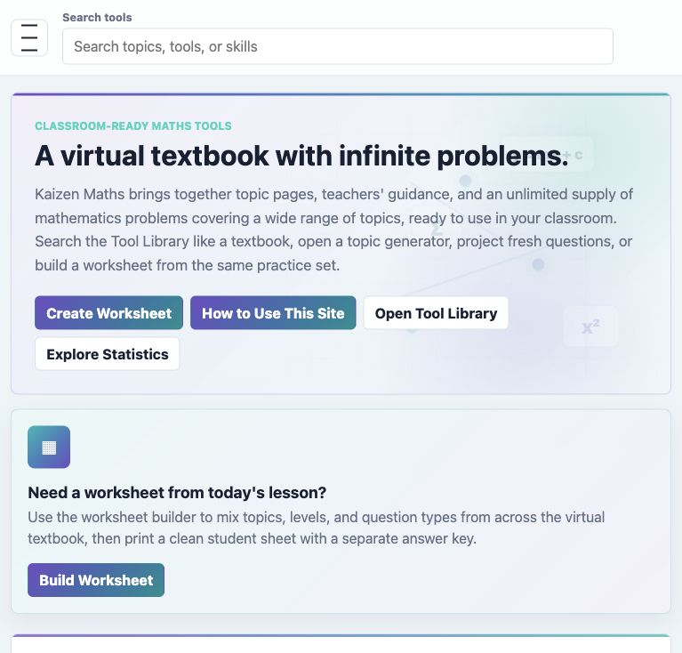
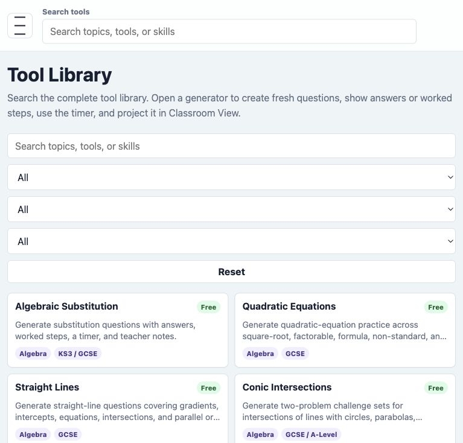
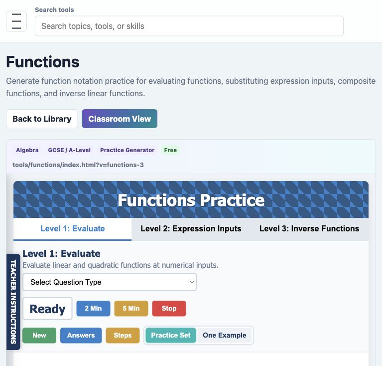
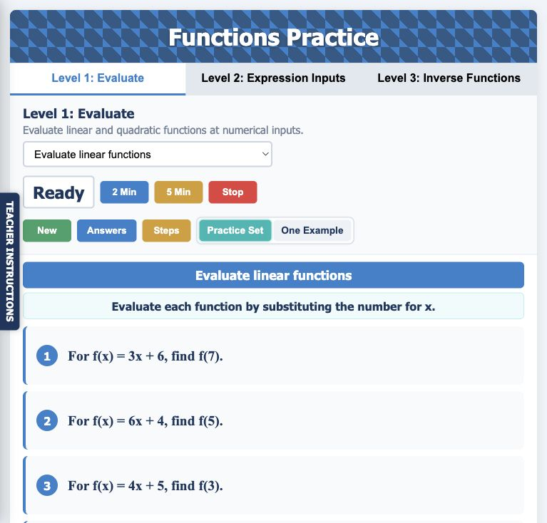
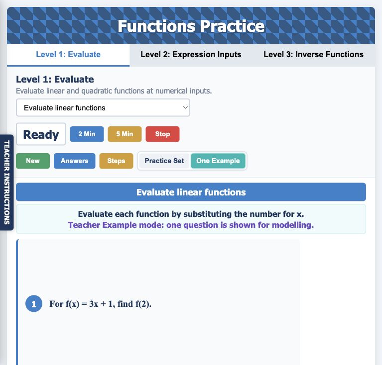
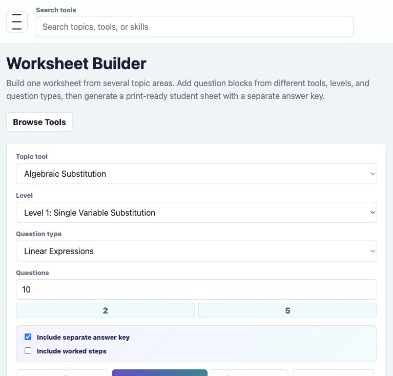

Start at the dashboard
Use the dashboard links for the Tool Library, Worksheet Builder, and this guide.
Kaizen Maths is designed to feel like a virtual textbook with unlimited fresh practice. Choose a topic, select a level and question type, project a board-ready set, reveal answers or worked steps, and build worksheets from the same generators when you need printed practice.
Use the dashboard links for the Tool Library, Worksheet Builder, and this guide.
Search like a textbook or browse by Algebra, Number, Geometry, Statistics, and Classroom Tools.
Open Classroom View, choose a level and question type, then generate a fresh set.
Use One Example for teaching, Practice Set for students, or the Worksheet Builder for handouts.
The dashboard is the front door of the site. It gives teachers a quick route into the main workflows: building a worksheet, reading this guide, opening the full tool library, or jumping into a subject collection.

The Tool Library is the main index of the virtual textbook. Use the search bar when you know the exact topic, or use the collection links in the sidebar to browse by curriculum area.
functions, circle, fractions, or trigonometry.
Each tool has a topic page before the classroom view. This page explains what the generator covers and provides teacher guidance without crowding the projected question screen.

The classroom view is designed for projection. Choose a level, choose a question type, then generate questions. Most algebra tools show five questions. Diagram-heavy tools usually show four so the whole set remains visible on the board.


The display switch has two choices: Practice Set and One Example. One Example shows a single question so the teacher can model the method before students practise.
Click Practice Set to return to the normal full set. The active choice is highlighted, so the current mode is always visible.
The Worksheet Builder uses the same topic levels and question types as the classroom tools. Teachers can combine different topics into one worksheet and generate a separate answer key.
